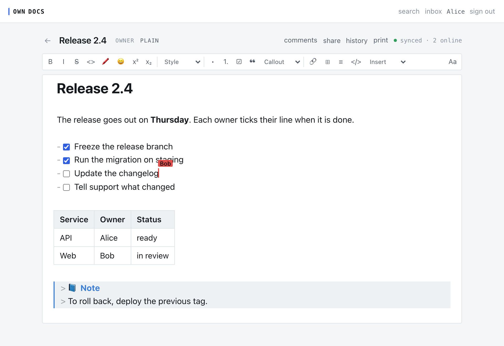
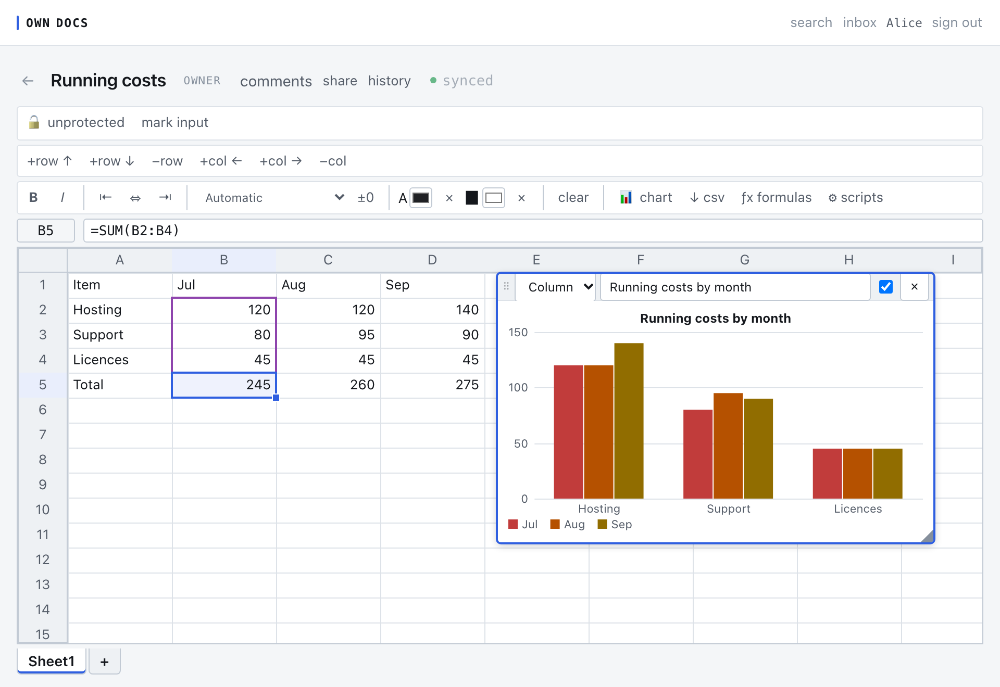

Collaborative documents and spreadsheets, on a machine you run
One Go binary over one SQLite file. Your team edits together in the browser, and nothing leaves your server.
Documents
A document is a markdown file that several people edit at once. The editor previews as you type and keeps the text plain: headings, lists, tables, code blocks, footnotes, and links between documents. Name a version when it matters, compare any two points in a document's history, and comment on a selection.

Sheets
A sheet is tabs of cells with formulas, number formats, and charts. Every cell is locked by default. Unlock the cells that are inputs, protect the sheet, and only the inputs accept edits. Scripts run in a sandbox with no network, when you run them or, if you ask, on every edit. The formula reference lists every function the engine can call.

Folders and sharing
Share a document with a person, or file it into a shared folder and everyone on the folder reaches it. Access adds and never subtracts: the best grant a person holds, on the document or on a folder above it, is the one that applies. Five roles:
- viewer
- Reads the document.
- commenter
- Reads and comments, but cannot change the content.
- editor
- Changes the content.
- manager
- Shares and administers the document, but cannot delete it or hand it over.
- owner
- Everything, including deleting the document and transferring it.
A share link grants a role to whoever signs in with it, and you can revoke the link without taking back what it already granted.
Finding things
Search covers folder names, document text, and comments, and a role change takes effect on the next search. Mentions and replies land in an in-app inbox. If you connect a mail relay, a mention or a share also sends an email.
Keeping copies
Named versions can be mirrored into a git repository, one commit per version, with folders as directories. Backups are verified before they are reported as good. Printing a document is its PDF export.
Keyboard shortcuts in the editor
⌘ on a Mac, Ctrl elsewhere.
- ⌘B
- Bold
- ⌘I
- Italic
- ⌘E
- Inline code
- ⌘K
- Insert a link
- Shift+Enter
- Hard line break
- Tab
- Nest a list item
- Shift+Tab
- Un-nest a list item
Running it
Own Docs is a single static binary and a data directory. The self-hosting page has the commands to run it on your machine, deploy it with Docker, back it up, and connect mail.